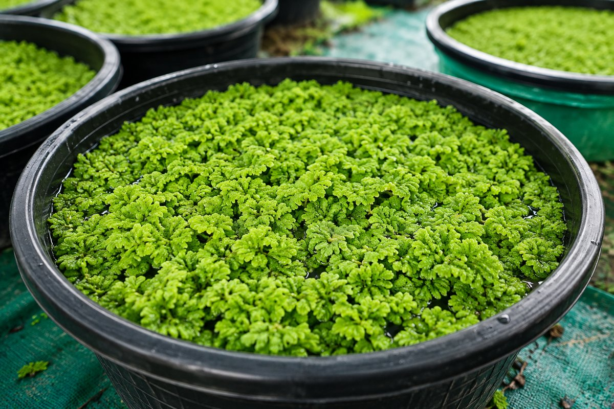
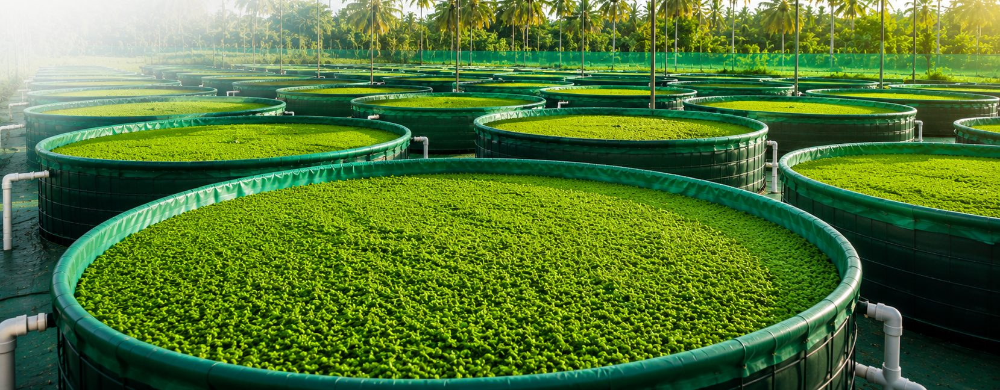
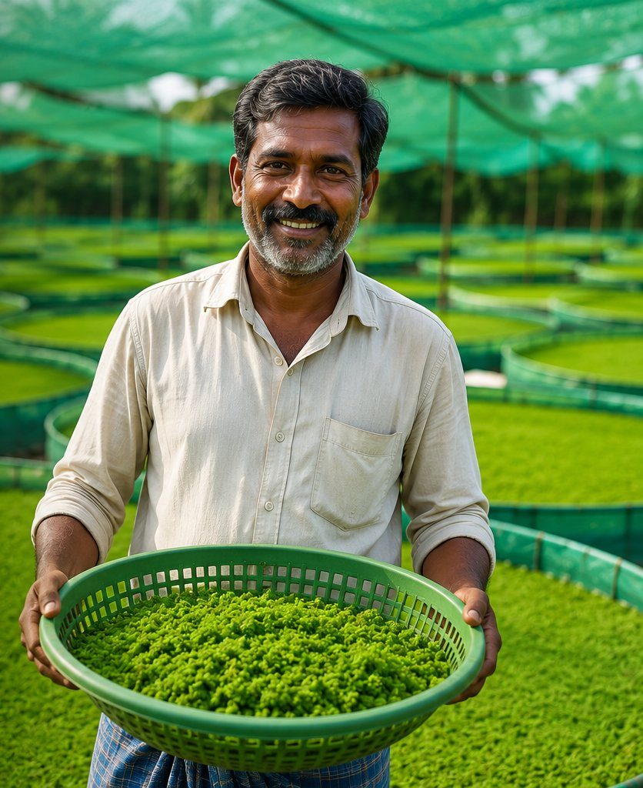
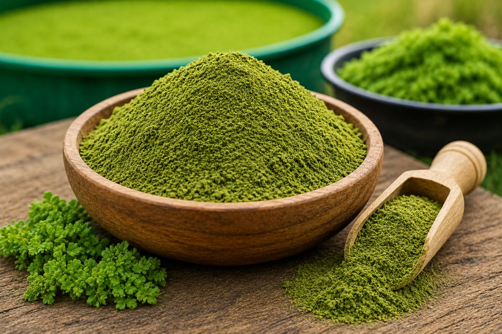
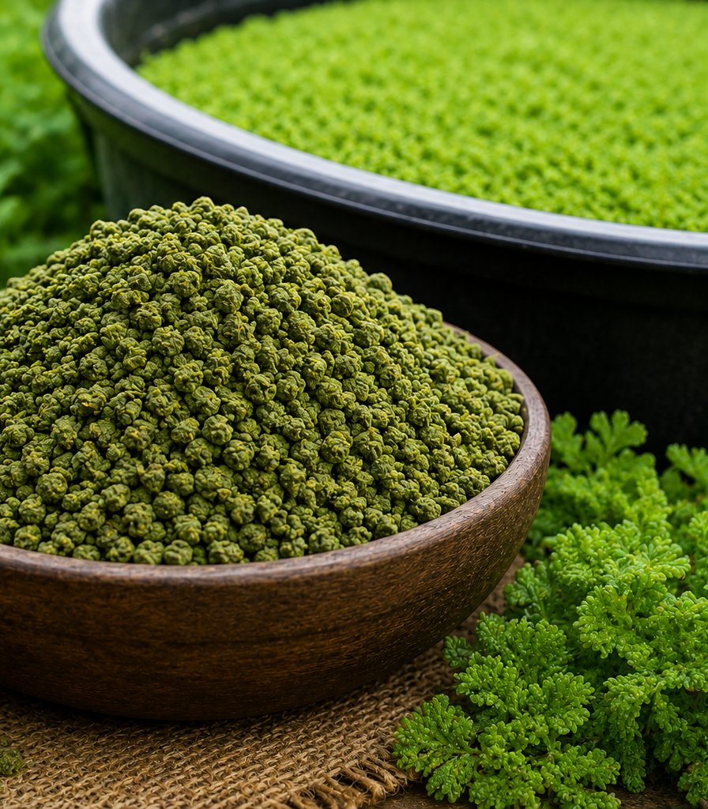
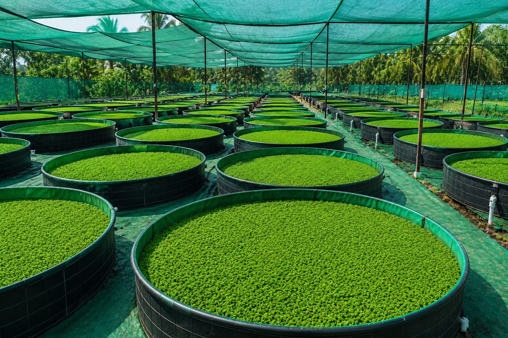
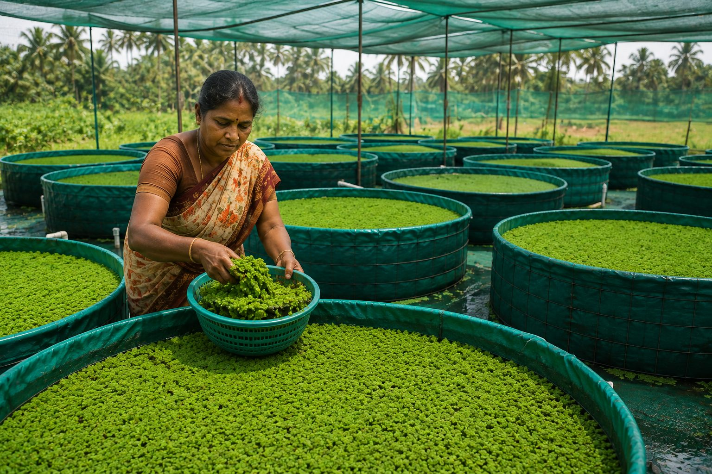

Fresh Azolla
₹70 per kg
Live, freshly harvested Azolla for cattle, goats and poultry. Best for farms that can feed it within a short time of delivery.
kg

Namakkal, Tamil Nadu
Fresh Azolla, Azolla powder and Azolla granules: natural, plant-based feed supplements for livestock and poultry. Add them to your regular ration and order directly on WhatsApp.
அசோலா தீவனம் – மாடு, ஆடு, கோழிகளுக்கான இயற்கை தீவன துணை உணவு
Azolla is a feed supplement for cattle, goats and poultry. It is not a complete feed.
Azolla is a small, free-floating aquatic fern that grows on the surface of still, shallow fresh water. Inside its leaves it lives with a nitrogen-fixing cyanobacterium, which is one reason it grows quickly and can be relatively rich in protein compared with many green fodders.
Farmers across India grow Azolla in shallow water beds, tanks and grow bags. We grow ours in grow bags on our farms in Namakkal. Fresh Azolla is mostly water. Dried and ground, it becomes Azolla powder; formed into small pieces, it becomes Azolla granules.
Because it grows in water-filled grow bags and needs little land, many farmers consider Azolla a low-input, eco-friendly addition to livestock feeding.

Azolla is used alongside your animals' normal feed, not instead of it. Published studies report crude protein levels commonly in the range of roughly 20–30% on a dry-matter basis, along with minerals and amino acids, though values change with growing conditions.
Most farmers mix a small amount into the ration they already use: rinsed fresh Azolla into concentrate, or dried powder and granules into mash and feed. Introduce it gradually, keep the rest of the ration balanced, and ask your veterinarian or animal nutritionist to help set quantities for your herd or flock.
Choose the form that suits how you feed. Pick a quantity in kilograms and add it to your cart. Orders above ₹399 ship free.

Live, freshly harvested Azolla for cattle, goats and poultry. Best for farms that can feed it within a short time of delivery.

Dried, finely ground Azolla that blends easily into concentrate or mash and stores far more easily than fresh.

Dried Azolla in granule form that pours and measures cleanly and mixes into feed with less dust than fine powder.

For cattle, Azolla is used as a natural feed supplement on top of green fodder, dry roughage and concentrate. Dairy farmers often add fresh Azolla, or dried powder or granules, to the concentrate portion of the ration.
Azolla has been studied as a supplementary feed ingredient for dairy cattle, including studies evaluating milk yield. Results vary, and it should not be treated as a guaranteed way to increase output. Milk production depends mainly on breed, health, the overall ration and management.
Poultry keepers use Azolla as a small addition to mash or grain: fresh Azolla chopped finely, or dried powder and granules mixed in. Studies of Azolla in poultry diets have reported mixed results depending on how much is included, so keep it a modest part of a balanced ration.
It suits backyard flocks, desi birds, ducks and commercial layers and broilers alike as a supplement. It is not a substitute for a complete poultry feed.
Goats browse a wide variety of plants, and many goat farmers offer Azolla as an extra green supplement next to tree fodder, dry roughage and concentrate.
Start with a small handful mixed into the usual feed, let the goats get used to the taste and texture, and increase slowly. Keep clean water available and follow your veterinarian's advice for kids, pregnant does and animals with health issues.
Azolla grows on water without soil, so even a small grow bag can supply a steady amount of green material. That is why it appeals to farmers looking for plant-based, eco-friendly livestock feed supplements to reduce how much they depend on bought-in ingredients.
Whether you keep cattle, goats or poultry, Azolla works best as one part of a well-planned feeding programme.

On our farms, Azolla grows in water-filled grow bags kept under green shade netting, which protects the plants from harsh midday sun. Once harvested, it is sold fresh, or dried and processed into Azolla powder and Azolla granules.
Because Azolla comes straight from the farm to you, you can ask us about a batch, harvest timing or delivery on WhatsApp before you order.
Our Azolla is grown in grow bags on our farms in Namakkal, Tamil Nadu, close to the farmers we serve.
Fresh Azolla, Azolla powder and Azolla granules, so you can pick what fits your feeding routine.
₹70, ₹195 and ₹210 per kg. What you see is what you pay for the product.
Larger orders ship free. For smaller orders, the shipping charge is confirmed with you before anything is sent.
Send your order in one tap and ask us anything about using Azolla, directly and in your own language.
A feed supplement, not a complete feed and not a guaranteed result. We will always tell you that plainly.
Azolla is a small, fast-growing floating fern that grows on still fresh water. It is used as a plant-based feed supplement for cattle, goats and poultry. Muthu Bio Feeds sells it as fresh Azolla, dried Azolla powder and dried Azolla granules.
No. Azolla is a feed supplement. It is added to your animals' regular ration of fodder, roughage and concentrate and does not replace it. Our products are never meant to be a complete feed.
Farmers commonly feed Azolla to dairy and other cattle, goats and poultry. Quantities differ by species, age and diet, so start small and ask your veterinarian or animal nutritionist for guidance.
Azolla has been studied as a supplementary feed ingredient for dairy cattle, including studies evaluating milk yield. Results vary, and Azolla should not be treated as a guaranteed way to increase output. Milk production depends mainly on breed, health, the overall ration and management.
Mix a small amount with the feed they already accept and increase slowly over several days to a week while watching their appetite and droppings. If you notice any problem, stop and consult your veterinarian.
Fresh Azolla is a green supplement that should be used soon after delivery. Azolla powder and granules are dried, store more easily and mix into concentrate or mash. Granules are easier to scoop and produce less dust than powder.
Fresh Azolla is ₹70/kg, Azolla powder is ₹195/kg and Azolla granules are ₹210/kg. Orders above ₹399 ship free. For orders below ₹399 the shipping charge is confirmed with you on WhatsApp.
There is no online payment on this website. Choose your products, add your name, mobile number and address, and tap Order on WhatsApp. We confirm the order, delivery and payment details with you on WhatsApp.
Use fresh Azolla within a short time and keep it cool and shaded. Keep Azolla powder and granules in a clean, dry, airtight container away from moisture, heat and direct sunlight.
We are based in Namakkal, Tamil Nadu, India. Message us on WhatsApp at +91 98946 93414 with your location and we will confirm delivery availability and timing for your area.
Send your order on WhatsApp, or message us with questions about which form suits your animals.